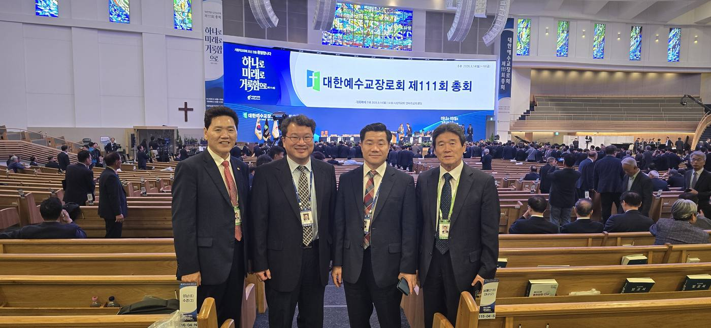
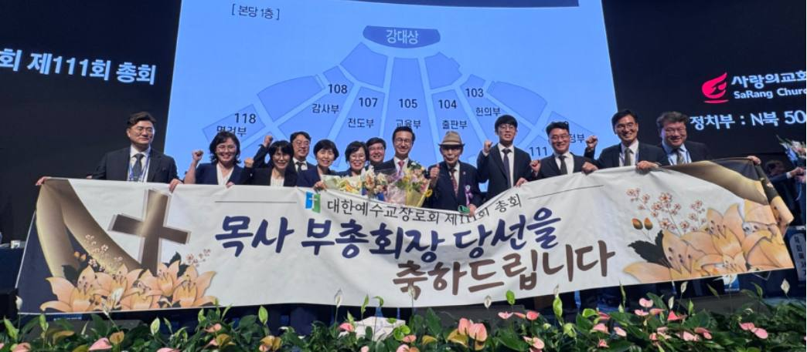
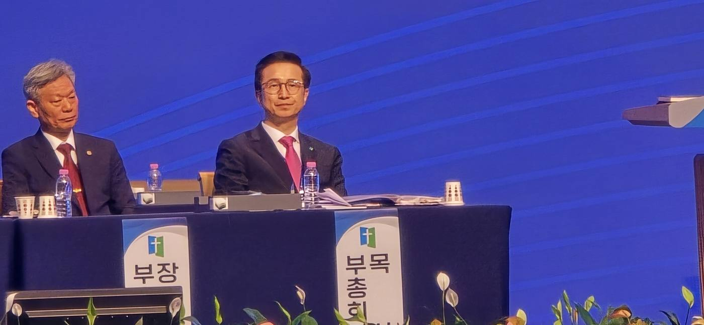
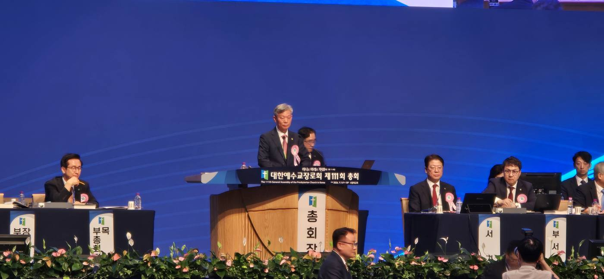
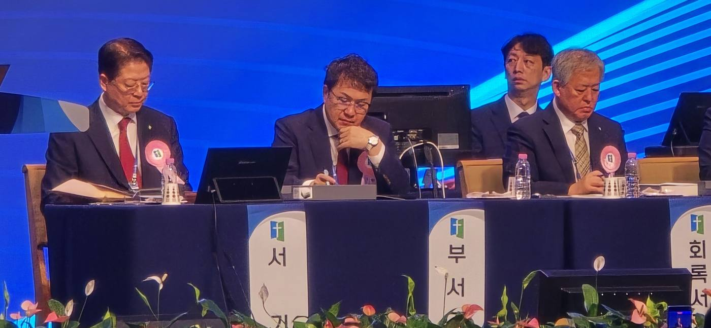
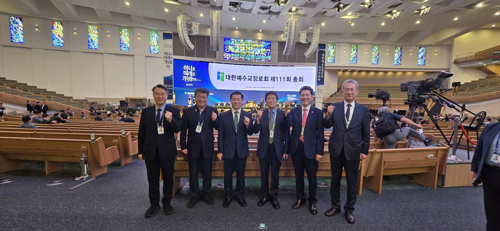
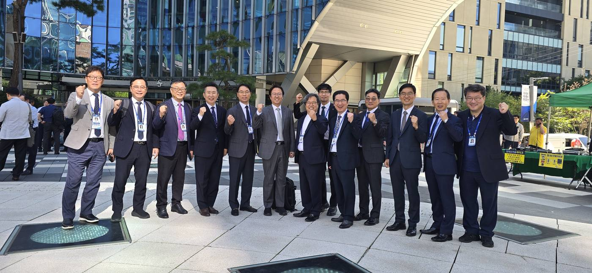
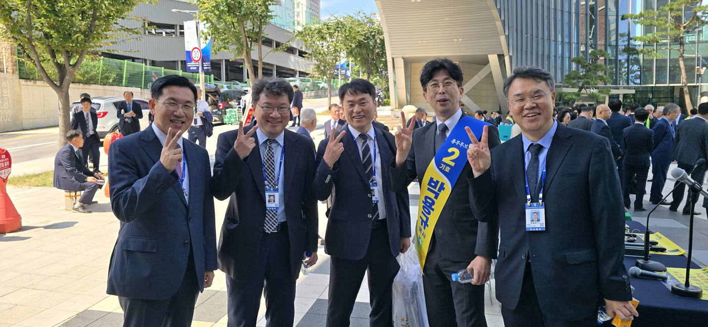
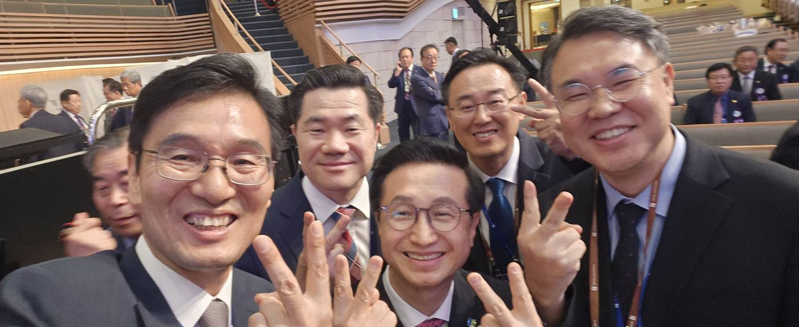
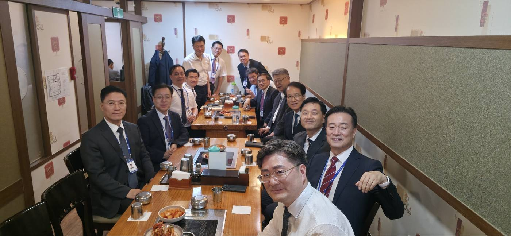

“하나로, 미래로, 거룩함으로” 다함께 외치며 파회
제111회 총회, 정영교 총회장 체제로 새 회기 출발
355건의 헌의안을 36시간 만에 처리한 제111회 총회가 교단 화합과 교회 부흥, 거룩성 회복을 향한 첫걸음을 내딛었다. 항존직 정년 연장과 여성 강도권 헌법개정은 모두 부결됐다.
대한예수교장로회 제111회 총회가 9월 14일부터 17일까지 사랑의교회에서 1,500여 명의 총대가 참석한 가운데 열려 모든 회무를 마치고 파회했다. 총회는 정영교 총회장을 중심으로 새로운 회기를 시작하며 ‘하나로, 미래로, 거룩함으로’를 핵심가치로 설정하고, 교단 화합과 교회 부흥, 거룩성 회복을 향해 첫걸음을 내딛었다.

정영교 총회장 체제 출범
제111회 총회는 정영교 총회장과 임원을 선출하며 새 회기의 진용을 갖췄다. 총회 슬로건 ‘하나로, 미래로, 거룩함으로’는 111회기 교단 운영의 핵심가치로 제시됐으며, 총대들은 파회에 앞서 이 슬로건을 다함께 외쳤다.


36시간 만에 끝낸 회무
제111회 총회는 그 어느 총회보다 빠르게 회무를 진행했다. 예민한 안건을 두고 장시간 토론하거나 때로 치열하게 논쟁하던 모습은 거의 찾아볼 수 없었다. 첫날 천서검사위원회의 4개 노회 천서제한 발표와 부회록서기 후보 문제로 잠시 논란이 일었고, ‘정년 연장’ 헌의안 처리를 위해 2시간 동안 토론을 진행했을 뿐이다.

111회기 상비부 임원 인사와 보고, 355건에 이르는 헌의안 보고와 결의, 총회예산안과 긴급동의안 처리 등 모든 안건은 16일 오전·오후 회무와 17일 오전 회무까지 36시간 만에 마무리됐다.

항존직 정년 연장, 52표 차로 부결
총회장을 비롯해 20명이 발언자로 나선 ‘교회 항존직 정년 연장’ 헌의안은 찬반투표 끝에 부결됐다. 정년 연장에 찬성한 발언자들은 신학적 타당성과 함께, 목회자가 부족한 시대를 대비하고 교회의 타 교단 이탈을 방지하기 위해 정년을 75세로 늘려야 한다고 주장했다. 반대 발언자들은 정년 연장으로 교회의 신뢰도가 더욱 하락하고 성도들의 지지도 얻지 못할 것이라고 지적했다.
| 구분 | 찬성 | 반대 | 결과 |
|---|---|---|---|
| 교회 항존직 정년 연장(75세) 헌의안 · 전자투표 | 425표 | 477표 | 부결 |

여성 강도권 헌법개정도 부결
여성 강도권 헌법개정에 대한 노회 수의 결과도 주목받은 안건이었다. 4월 정기회에서 140개 노회가 헌법수의를 진행했으며, 전체 찬성률은 54.5%로 집계됐다. 헌법개정 요건인 3분의 2 이상 찬성에 미치지 못해 부결됐다.
AI 윤리 가이드라인 채택 등 주요 결의
이외에도 제111회 총회는 다음과 같은 사항을 결정했다.
- AI 윤리 ‘AI 윤리 및 신앙 활용 가이드라인’을 총회 공식 문서로 채택
- 민법 대응 민법 제38조 개정안 대응을 위한 특별위원회 구성
- 이단 지정 정동수 씨 이단 지정, 이단 김현두 고희인을 추종하는 성경총회 이단 지정
- 성경주석 총회 차원에서 개혁신학에 입각한 성경주석 발간
- 세례교인헌금 농어촌 지역 교회 세례교인헌금 1,000원 인상(6,000원으로)
총회 이모저모
회무 사이사이에는 총신 동기들과 노회원들이 함께 모여 단합하는 모습이 곳곳에서 눈에 띄었다.

크고 작은 소모임들도 자연스럽게 형성돼, 총회는 회무의 자리이자 교제와 연대의 자리가 됐다.


